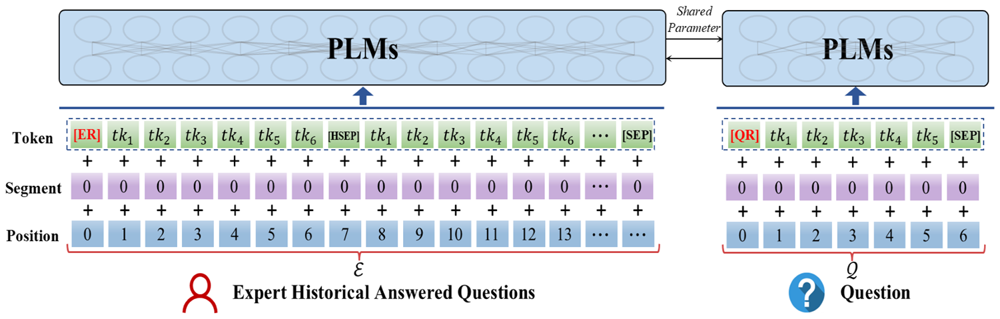
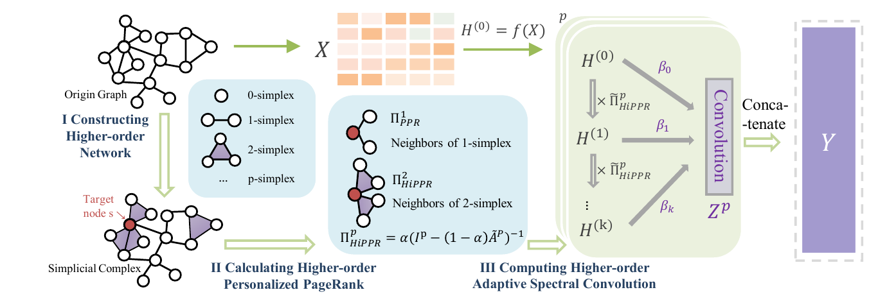

I am a Ph.D. student at the School of New Media and Communication, Tianjin University (2023-present), supervised by Prof. Wenjun Wang. I was selected for a 12-month joint Ph.D. research visit at the A*STAR Institute of Advanced Intelligence and Computing (A*STAR IAIC), hosted by Research Scientist Xin Zhang.
Previously, I received my B.Eng. degree in Computer Science and Technology and my M.Eng. degree in Computer Technology from Tianjin University. Before returning to academia, I worked in data analytics at Du Xiaoman Financial and China Asset Management.
Research Interests
My research focuses on graph deep learning, especially higher-order graph representation learning, heterophily mitigation, multimodal graph learning, few-shot graph anomaly detection, and graph fairness. I am interested in using topological structures to model complex interactions beyond pairwise relations and in translating these methods to recommendation, risk analysis, and other real-world systems.
For research discussions or collaboration, please contact me at ymwang@tju.edu.cn.
Publications

Dual-View Self-Supervised Pre-Training for Expert Finding
Mingqiao Zhang, Hongtao Liu, Yinghui Wang, Yumeng Wang, Qiyao Peng
Proceedings of the Thirty-Fifth International Joint Conference on Artificial Intelligence (IJCAI), 2026, pp. 3232-3240.

Leveraging Personalized PageRank and Higher-Order Topological Structures for Heterophily Mitigation in Graph Neural Networks
Yumeng Wang, Zengyi Wo, Wenjun Wang, Xingcheng Fu, Minglai Shao
Proceedings of the Thirty-Fourth International Joint Conference on Artificial Intelligence (IJCAI), 2025, pp. 6506-6514.
GAD
Meta-Learning Based Few-Shot Graph-Level Anomaly Detection
Liting Li, Yumeng Wang, Yueheng Sun
2nd Workshop on Advances in Robust and Reliable Machine Learning, 2025.
GNN
Improving Fairness in Graph Neural Networks via Counterfactual Debiasing
Zengyi Wo, Chang Liu, Yumeng Wang, Minglai Shao, Wenjun Wang
3rd Workshop on Ethical Artificial Intelligence: Methods and Applications, 2024.
SEP
Addressing Graph Anomaly Detection via Causal Edge Separation and Spectrum
Zengyi Wo, Wenjun Wang, Minglai Shao, Chang Liu, Yumeng Wang, Yueheng Sun
3rd Workshop on Uncertainty Reasoning and Quantification in Decision Making, 2024.
Education & Experience
Ph.D. in Electronic Information
Tianjin University · School of New Media and Communication
Senior Data Analyst
China Asset Management · Data Center
Data Analyst
Du Xiaoman Financial · Credit Products and Marketing
M.Eng. in Computer Technology
Tianjin University · including study at Polytech Nice Sophia, France
B.Eng. in Computer Science and Technology
Tianjin University